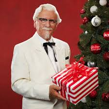

Kfc story

KFC was founded by Colonel Harland Sanders
an entrepreneur who began selling fried chicken
from his roadside restaurant in Corbin.. Sanders identified
the potential of the restaurant franchising
concept, and the first "Kentucky Fried Chicken"
franchise opened in Utah in 1952.
In July 1940, Sanders finalised what came
to be known as his "Original Recipe" of 11 herbs and spices.